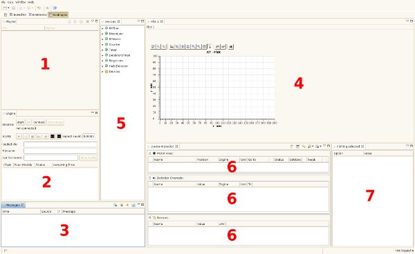

The image below shows an overview of the EveEngine Perspective.

| 1 | Playlist View | contains queued scans |
| 2 | Engine View | shows engine status and contains controls |
| 3 | Messages View | messages from multiple sources are displayed here |
| 4 | Plot View | measurement visualization and statistics |
| 5 | Devices View | devices used in the currently executed scan arranged in a tree (by class) |
| 6 | Device Inspector View | allows monitoring and manipulation of devices |
| 7 | Device Options View | shows options of a selected device |